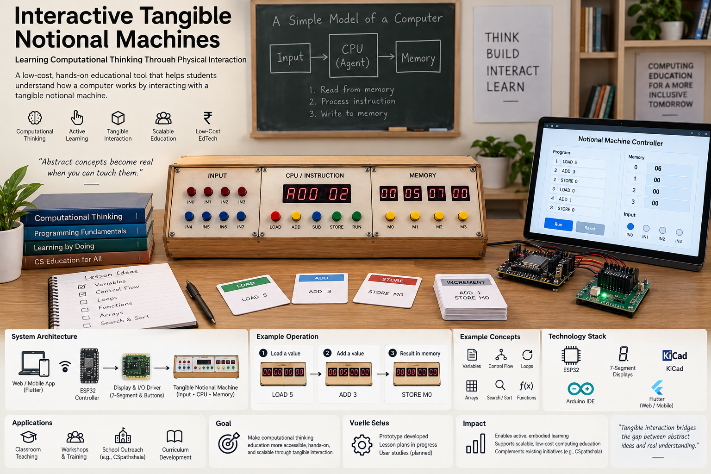

Past project · Computing education
Interactive Tangible Notional Machines
A small hardware kit that shows what happens inside a program, step by step, so students can see and touch ideas like memory and algorithms.
- ESP32Controller
- 7-segmentDisplays
- Low-costClassroom kit

01. The problem
When students learn programming, the hardest part is what they cannot see: where a value is stored, what changes when a line runs, why a loop stops. On a screen these things are only explained, not shown.
This becomes even harder in schools where there are not enough computers for everyone.
02. What we built
A tangible notional machine: a simple physical model of how a computer runs a program. The values in memory are shown on seven-segment displays, so students can follow each step, change it, and discuss it with each other.
03. Key points
What it does
- Hands-on activities for learning algorithms and memory concepts.
- Made for computing education in schools with little infrastructure.
- Low-cost and self-contained, so it is easy to make many kits.
How it works
- ActivityAn algorithm or memory task
- AppFlutter companion app
- ESP32Runs each step
- DisplaysShow the current values
- StudentsSee and discuss each step
How I built it
The board runs on an ESP32 and drives seven-segment displays. I designed the PCB in KiCad, wrote the firmware in the Arduino IDE, and made a companion Flutter app to go with the hardware.